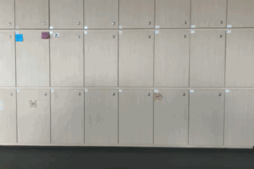

Class Exercise
Today, we were introduced to HTML and CSS. This was the day that this website was born. We also tried connecting electrical components to the microbit via a breadboard.

We used components like;
- LED
- Resistors
- Variable resistors
- Connecting wires
The biggest takeaway from this lesson was the basic knowledge of building a website from scratch. We explored various functions within a website:
- Adding hyperlinks
- Creating hyperlinks that open in a new tab
- Creating anchor links;
- Creating margins;
- Adding a horizontal line;
- Breaking a line;
- Adding emojis and gifs. 😃
Microbit Project Progress

We shortlisted three objects - Tap, Swivel Chair and a Box.
We analysed each of its form and function,
and assessed their potential for this project.
Tap

Specifically, the flow of water.
We thought it would be interesting to pick an everyday object and measure a fluid element. The intention was to vary sound
or visuals with the intensity of the water flow. The strategy was to place impact or pressure sensors on the pivoting
point of the tap, or the bottom of the sink bed. With the ability to vary sound using the flow of water, maybe it's a delight to wash the dishes everynight afterall.
Swivel Chair

Specifically, the green studio chair.
We hope to nudge people to better appreciate for everyday items by introducing an element of fun.
Ideas included the use of an accelerometer to respond to the speed at which its occupant was rolling about, or a light sensor
on the backrest to indicate whether a chair was occupied or not. This latter could be use to signify the availability of seats in the studio, hence
serving a pragmatic function beyond play.
Box
Specifically, a transparent box. We thought a multiversatile cube that could facilitate many types of games, beyond just being a regular dice would be nice.
Here are some of the experimentations we did on microbit!
 Box reacting to shaking.
Box reacting to shaking.
 Box reacting to spinning.
Box reacting to spinning.
 Box reacting with music to tilting.
Box reacting with music to tilting.